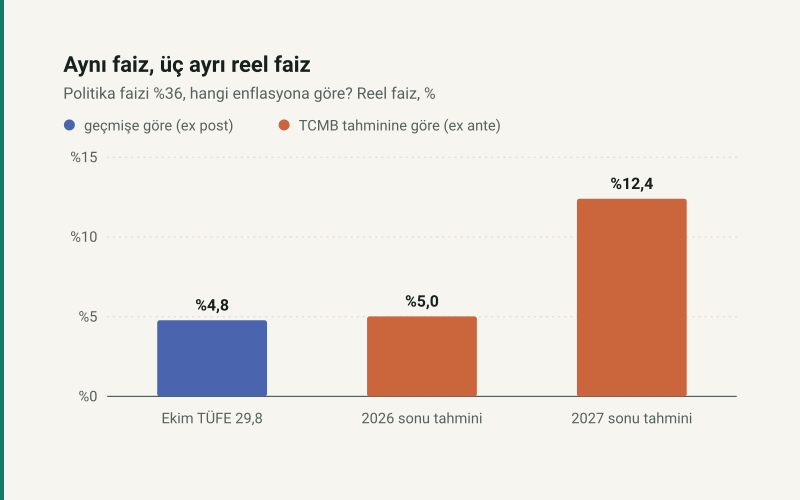

Kısa cevap
TCMB'nin kendi tahminiyle reel faiz %12,4. Politika faizi %36,0; Merkez Bankası 2027 sonu için %21,0 enflasyon tahmin ediyor. Bugünkü faiz bu tahmine göre ileriye dönük olarak enflasyonun %12,4 üstünde. Geçmiş 12 ayın enflasyonuna (ekim %29,8) göre ise yalnız %4,8.
Hedef yolu yukarı kaydı. 2027 ara hedefi %15,0'ten %21,0'e, 2028'inki %9,0'dan %13,5'e çıktı. 2026 sonunda 100 TL olan bir sepet eski yola göre 2028 sonunda 125,35 TL olacaktı, yeni yola göre 137,34 TL: fiyat düzeyi %9,6 daha yüksek.
Mevduatta eşik %24,2. 6 ay vadeli, yılda iki kez yenilenen bir TL mevduatın %17,5 stopajdan sonra 2027 tahmini kadar getiri sağlaması için brüt yıllık faiz en az %24,2 olmalı.
Raporda ne değişti?
TCMB yılda dört kez Enflasyon Raporu yayımlıyor; dördüncüsü 12 Kasım 2026'de çıktı. Ekim ayında yıllık tüketici enflasyonu %29,8'e geriledi ama bir önceki raporun öngördüğü seviyenin biraz üzerinde kaldı. Raporun gösterdiği sebep enerji fiyatları ve Türk lirası cinsinden ithalat fiyatları varsayımındaki artış.
| Yıl | Tahmin (ER 2026-IV) | Ara hedef (yeni) | Ara hedef (önceki) |
|---|---|---|---|
| 2026 | %29,5 | %24,0 | %24,0 |
| 2027 | %21,0 | %21,0 | %15,0 |
| 2028 | %13,5 | %13,5 | %9,0 |
| 2029 | %9,0 | — | — |
2026 tahmini (%29,5) hedefin (%24,0) 5,5 puan üstünde; 2027 ve 2028'de tahmin ve yeni ara hedef aynı. Orta vadeli hedef değişmedi: %5,0. TCMB ikinci rapordan beri tahmin aralığı paylaşmıyor; belirsizliği aralık yerine risklerin anlatımıyla veriyor. Bu yüzden tabloda tek bir sayı var, bir aralık değil.
Reel faiz hangi enflasyona göre?
Reel faiz, nominal faizin enflasyondan arındırılmış hâlidir: (1 + faiz) / (1 + enflasyon) − 1. Sonuç hangi enflasyonun kullanıldığına göre çok değişiyor:
| Kullanılan enflasyon | Enflasyon | Reel faiz |
|---|---|---|
| Geçmiş 12 ay (ekim TÜFE) | %29,8 | %4,8 |
| 2026 sonu tahmini | %29,5 | %5,0 |
| 2027 sonu tahmini | %21,0 | %12,4 |
Geçmişe göre ölçülen (ex post) reel faiz, bugünkü faizin geçen yılın enflasyonuna göre konumunu söyler. Para politikasının duruşu için bakılan ise ileriye dönük (ex ante) reel faizdir: borç alan ve verenin önündeki yıl için beklediği enflasyona göre. Enflasyon düşerken ikisi arasındaki fark büyür. Aylık seyri Türkiye Verisi'ndeki reel politika faizi sayfasında BIS verisiyle izlenebilir.
Faiz 22 Ekim 2026'de %37,0'den %36,0'ya indirildi; bir sonraki karar 10 Aralık 2026'da. TCMB, adımların enflasyonun gidişatına göre toplantı bazında belirleneceğini söylüyor. Faiz indirilirse ileriye dönük reel faiz, tahmin aynı kaldıkça aynı oranda daralır.
Hane bütçesi için ne demek?
Maaş. 2026 sonundan 2028 sonuna kadar alım gücünü korumak için gereken toplam artış eski ara hedeflere göre %25,3 idi; yeni ara hedeflere göre %37,3. Bu, ücret ve emekli aylığı pazarlıklarında bakılacak eşiğin yükseldiği anlamına geliyor.
Mevduat. Getirisinin enflasyonu karşılaması için gereken brüt faiz, stopaj ve vade yapısına bağlı:
| Karşılanacak enflasyon | Gereken brüt yıllık faiz |
|---|---|
| 2027 sonu tahmini %21,0 | %24,24 |
| 2026 sonu tahmini %29,5 | %33,45 |
Hesap, faizin her 6 ayda bir anaparaya eklendiğini ve stopajın her vadede kesildiğini varsayar. Kendi mevduatınızın net getirisini faiz dönüştürücü ile, enflasyona göre gerçek değişimini enflasyon hesaplama aracıyla bulabilirsiniz.
Kredi. İleriye dönük reel faizin yüksek olması, bugün alınan TL kredinin geri ödemesinin TCMB'nin tahmini tutarsa alım gücü olarak pahalı kalacağını gösterir. Tahmin yukarı saparsa borçlu lehine, aşağı saparsa aleyhine işler.
Varsayımlar ve sınırlar
- Tahminler TCMB'nin; bu yazı yalnız aritmetiğini yapar. Tahmin aralığı yayımlanmadığı için sonuçlar tek senaryodur.
- Reel faiz politika faiziyle hesaplandı; mevduat ve kredi faizleri politika faizinden farklıdır.
- Mevduat hesabı 6 aya kadar vadeli TL mevduattaki stopaj oranını kullanır (GİB rehberi). Daha uzun vadede oran farklıdır.
- Fiyat düzeyi karşılaştırması ara hedefleri tam tutturulmuş varsayar.
Kaynaklar
- TCMB Enflasyon Raporu 2026-IV, Bölüm 3 "Orta Vadeli Öngörüler", s.59–61
- PPK basın duyurusu 2026-45, 22 Ekim 2026
- TCMB 2026 PPK takvimi
- Mevduat stopajı: GİB, GVK geçici 67. madde rehberi (sitenin varlık karşılaştırma motoru)
- Aylık reel politika faizi: Türkiye Verisi (BIS politika faizi ve TÜFE)
Sık sorulan sorular
TCMB 2027 sonu enflasyon tahmini kaç?
12 Kasım 2026 tarihli Enflasyon Raporu'nda 2027 sonu tahmini %21,0; ara hedef de %21,0'e yükseltildi. 2026 sonu tahmini %29,5.
Reel faiz pozitif mi?
Evet. Politika faizi %36,0; ekim TÜFE'sine göre reel faiz %4,8, TCMB'nin 2027 tahminine göre %12,4.
Bir sonraki faiz kararı ne zaman?
10 Aralık 2026. Karar sonrasında bu yazının hesapları yeni faizle güncellenir.